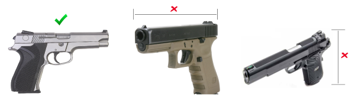

I would like a specific model added. Who do I contact?
Send me a private message on Reddit here.
It's not required, but it will make adding the model a lot easier for me if you include these in your request:
I found a problem with the dimensions for one of the guns. How do I report it?
Send me a private message on Reddit here.
While I try to make sure each gun's size is as accurate as possible, mistakes do happen. Sometimes finding images is tricky. In order to make sure the dimensions and aspect ratio matches the manufacturer's specifications, I need to find images that are perfectly flat and two dimensional. For example, take a look at the image below.
When the gun is rotated horizontally, the length will not be correct. When the gun is rotated vertically, the height won't be correct. The perfect image will not be rotated in any direction.
Sometimes I can't find a perfectly flat image, so I have to compromise and use an image that isn't ideal. I try to resize the gun to match the manufacturer's specifications as closely as possible. If you think a certain gun isn't resized correctly to show accurate dimensions, please let me know and I'll do my best to fix it.
Can you add the width of the guns for comparison?
It's difficult to find images that showcase the width of the gun. A lot of manufacturers only have side images of the guns. In addition to finding the images, each manufacturer measures the width of the gun slightly differently. For example, some manufacturers measure the width of the slide while others may include controls such as the thumb safety.
I'm not abandoning the idea of showing width comparisons, but my primary focus at the moment is adding more guns to the existing list and making the page more user friendly. Once I feel like the page is in a good state, I will come back and see what it'll take to add width comparisons.